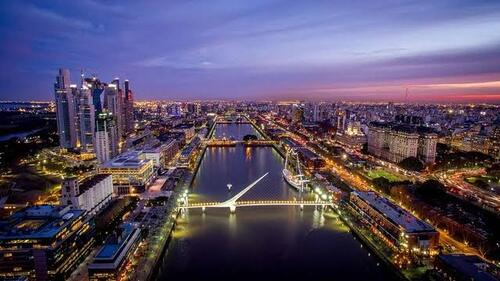

Sus barrios mas populares
Puerto Madero
Puerto Madero es un área renovada cercana al muelle. Sus edificios reconvertidos de ladrillos rojos contienen restaurantes de carnes de lujo populares entre los turistas y los que están de almuerzo de negocios. Elegantes rascacielos albergan corporaciones multinacionales y departamentos de alto valor. Los senderos recorren varios lagos en la rica Reserva Ecológica Costanera Sur, que atrae a familias y corredores. El Puente de la Mujer es un elegante puente colgante que cruza el muelle.
Palermo
Palermo es uno de los 48 barrios en los que se encuentra dividida la Ciudad Autónoma de Buenos Aires, Argentina. Ubicado al norte de la ciudad, su territorio abarca la totalidad de la Comuna 14. Con 15,6 km² de superficie, es el de mayor extensión de la ciudad. Es un conglomerado urbano fundamentalmente residencial y de esparcimiento. Gran parte de su extensión está ocupada por los denominados Bosques de Palermo, que incluyen una sumatoria de varios parques y espacios verdes. También es un importante polo gastronómico, cultural y audiovisual. Dado el dinamismo del barrio, existen varios "sub-barrios" no oficiales determinados por el tipo de actividad que se realiza en esa zona. Las denominaciones están dadas por el uso cotidiano, e incluyen;a Palermo Soho y Palermo Hollywood
Recoleta
Recoleta es un área próspera, conocida por sus townhouses estilo París, antiguos palacios opulentos y boutiques de lujo. El Cementerio de la Recoleta es una de las atracciones principales, ya que alberga las tumbas extravagantes de íconos nacionales como Eva Perón. En el Museo Nacional de Bellas Artes, se exhiben obras maestras, mientras que en el Centro Cultural Recoleta se ofrecen eventos temporales de vanguardia. En la Plaza Francia, cubierta de césped, se lleva a cabo un mercado de artesanías durante los fines de semana.